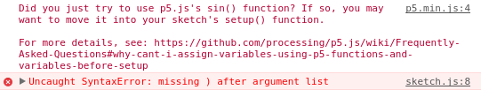
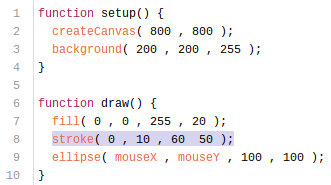

Achilles: Wow, this is cool!
Tortoise: I'm glad you think so. But couldn't you make it even cooler?
Achilles: How do you mean?
Tortoise: There are a lot of really simple changes you could make to the code right now to change how it looks.
Achilles: Like what?
Tortoise: Well, how about color?
Achilles: Oh yeah! Color would be awesome! How do I do that?
Tortoise: Or how about changing the shape to a differnt size? Or maybe change it from an ellipse to a rectangle or a triangle? Or how about making it transparent, or just slightly transparent. Or perhaps you could get it to draw without a trail, or with a trail that fades over time.
Achilles: Stop it! I want to try all of those. Tell me how! I implore you!
Tortoise: OK. Let me explain each one in detail...
Achilles: Forget that! Can't you just give me a list of things to try and leave me alone so I can work?
Tortoise: Achilles, I'm so proud of you. I had a feeling you would enjoy this. In fact, I prepared just such a list already. I'll leave it with you and let you experiment.
Achilles: Are you leaving?
Tortoise: No, I'll hang out for a while and take a short snooze. That way I'll be here in case you run into trouble.
Achilles: What kind of trouble could I run into?
Tortoise: Well, at some point you might make a change that causes your program to stop working. If that happens, just wake me up, and I'll show you a tool you can use to figure out what is going wrong. I'll be right down there at the bottom of this page.
Achilles: OK. I'll let you know if I need help. Thanks for this, Ms. Tortoise!
Tortoise: It's been my pleasure. I look forward to seeing what you make! Now, here's that list.
Achilles: Ms. Tortoise... I'm really sorry to wake you, but I've run into trouble.
Tortoise: Hm? Oh! Hello Achilles. Trouble? Yes, that's bound to happen. Let me guess: You changed something and now your program is back to doing nothing. Am I right?
Achilles: Indeed you are. When I refreshed the webpage, it went back to a blank white page. Just like when we first started.
Tortoise: What's probably happened is that you've put something in your code that broke the rules of the programming language. In coding speak, we call that "bad syntax".
Achilles: Bad syntax, eh? Well, how do I make my syntax good again?
Tortoise: Well, we're going to have to debug your program.
Achilles: What the Hades does that mean? Debug?
Tortoise: It's a very old term, and its origin is pretty interesting. You should look it up sometime. But nowadays it refers to the process of dealing with issues in code.
Achilles: Well, I thought for a minute I was good at this coding thing. But apparently I've already screwed something up and now I have to do some arcane ritual to fix it.
Tortoise: It's a simple process, really. You just have to find the issue and fix it.
Achilles: Oh, that does sound simple. But how do I find the issue? I don't really even know what I'm doing just yet?
Tortoise: I'll show you a tool that you can use to help you find the issue. Open up that tab that has your webpage in it.
Achilles: OK, I did. It is still blank.
Tortoise: OK. We're going to open up your browser's console.
Achilles: What's the console?
Tortoise: It's a tool that all browsers come with that lets you look at a lot of technical stuff that webpages are doing.
Achilles: How do I open it?
Tortoise: It depends on which browser you're using. Every one is a little different. I know that in Chrome, you can get there by pressing ctrl-shift-i. What browser are you using?
Achilles: I use Xanthus.
Tortoise: Hmmm. Never heard of it. Try going into the menu and looking for something like "Developer Tools". Or you could do an internet search for "opening browser console on Xanthus".
Achilles: OK. Give me a minute. I'll figure it out.
Tortoise: I'll be right here when you do!
Achilles: OK. I think I found it. It opened a big, complicated window at the bottom of the screen.
Tortoise: Yes, that's it. On my browser, it opens on the right side. They're all a little different. Do you see a tab that says "Console"? Or maybe "JavaScript"?
Achilles: Yes.
Tortoise: Open that tab.
Achilles: OK. I opened it. There's a bunch of red text.
Tortoise: Then you're in the right place. The stuff in red indicates problems with the code. It will usually list a number with each problem. Do you see anything like that?
Achilles: Yes. I see two of them. One says "p5.min.js:4".
Tortoise: That means there's a potential problem in in the p5.min.js file at line 4.
Achilles: But I haven't done anything to that file.
Tortoise: OK. Good. Then that's not the source of your issue. What's the other number you found?
Achilles: There's a "sketch.js:8".
Tortoise: That's probably it. That means there's a potential problem in your sketch.js file at line 8. What does the error say?
Achilles: It says "Uncaught SyntaxError: missing ) after argument list". What does that mean?
Tortoise: Honestly, I'm not exactly sure. But that "SyntaxError" probably means that you've broken a syntax rule somewhere on that line, or maybe the line before it or after it.
Achilles: So what should I do?
Tortoise: Let's look at your code. The lines are numbered, so it will be easy to find line 8.
Achilles: OK. I'm looking at line 8. Oh! I left out a comma between two of the arguments! Oops!
Tortoise: So you've done the first part of the debugging process. You found the issue. Now all you have to do is fix it.
Achilles: That's easy. I'll just put that comma back in.
Tortoise: Great. Now commit and refresh to see if the issue is resolved.
Achilles: I did, and the red text didn't change. I still have a blank page.
Tortoise: Remember that it may take a few seconds for your changes to take effect. Be patient, and keep refreshing.
Achilles: Nope, still... Oh, there it goes. Yeah! The program is working again, and the red text went away. That console thing is still blocking half of the screen though.
Tortoise: You can go ahead and close it now. Just remember how to get back there, because this likely won't be the last time you'll have to debug.
Achilles: So this is going to happen a lot?
Tortoise: It will, indeed. It's part of the process.
Achilles: It doesn't seem like a very fun part.
Tortoise: Not usually. It can be very frustrating. Fortunately there is some skill involved.
Achilles: How is that fortunate?
Tortoise: Well, it means you can get better at it. And you will get better at it. I try to remember that whenever I start getting frustrated because I'm having a hard time fixing a bug. Every time you do it you get better.
Achilles: I would think that skilled programmers wouldn't make mistakes.
Tortoise: Not true. Everyone has to debug at some point. Skilled programmers do devlop some skills that make debugging less frequent and easier to deal with when it happens, though.
Achilles: Yeah, I think I'll try and learn some of those things as soon as possible.
Tortoise: I can certainly teach you a few of them. For now, though, why don't you continue experimenting with your new creation. Remember that your webpage is available online for anyone to see. Send me a link to it later so I can check out what you've made.
Achilles: I certainly will! Thank you, Ms. Tortoise! This has been a quite enjoyable experience. I'm excited to learn more. I'm already coming up with ideas for things I want to make.
Tortoise: I'm so glad that you enjoyed it. Let's get together again sometime, and I can show you a few more things.
Achilles: I'd love to! In the meantime, what should I do if I want to learn more on my own?
Tortoise: There are a couple sites you should check out. The p5.js website is a great resource. Especially check out the tutorials and reference pages.
Achilles: I'll bookmark it now.
Tortoise: Another great resource is Khan Academy's Intro to JS. It's set up like an online class, and it will teach you some really important programming concepts. Some of the early sections will cover things you already know, but you can skip ahead if you want. It is really a wonderful resource. If you have the time and interest, I recommend it highly.
Achilles: I'll check it out.
Tortoise: Excellent. Well, Achilles, this has been fun. But I had better start heading home. It's getting late.
Achilles: OK. I'm going to keep working on this sketch. Thank you again for taking the time to introduce me to coding!
Tortoise: It was my pleasure. I look forward to seeing what you make! Happy coding!